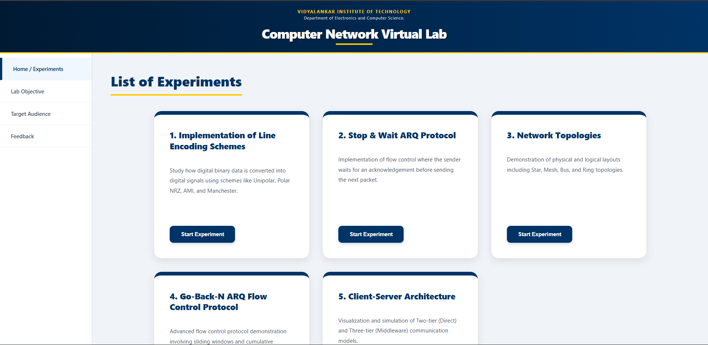

01. Line Encoding Schemes
Study digital transition rules (NRZ, AMI, Manchester) and DC component mitigation through a real-time oscilloscope signal analyzer.
02. Stop & Wait ARQ
Interactive flow control simulation visualizing retransmission logic upon Frame or Acknowledgment (ACK) loss scenarios.
03. Go-Back-N ARQ
Implementation of sliding window pipelining, cumulative acknowledgments, and window efficiency (η) calculations.
04. Network Topology Builder
Drag-and-drop sandbox environment for designing Star, Mesh, Bus, and Ring geometries with built-in rule validation engines.
05. Client-Server Architecture (2-Tier & 3-Tier)
A comparative simulation of network architectural models, demonstrating middleware logic, database isolation, and transactional data flow between Presentation and Data tiers.
1. Theory Phase
Conceptual deep-dives with OSI Layer mapping.
2. Simulation Phase
Real-time interactions and protocol execution.
3. Assessment Phase
Instant scoring quizzes for result validation.